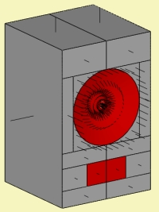
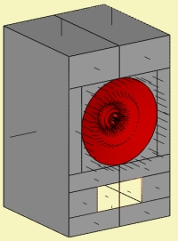
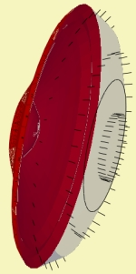
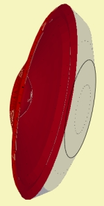

| Identifier | SwapNormals= | |
| Format | Boolean | |
| Purpose | Inverting direction of normal | |
| Used in | Elements, Baffle, Shell | |
| See also | Normals and Volumes | |
|
|---|
 |
 |
 |
 |
SwapNormals commands the Normal to invert direction.
Used in section Elements, Shell or Baffle yields inversion of all elements of this section.
SwapNormals can also be used in Position= in order to inverse mesh-file positions.
Check Normals on pages Views in order to see little indicators for Normals.
A plane is rendered oblique if viewed against the normal and transparent if viewed from rear.
See chapter Normals and Volumes for more information.
Excerpt of script for radiating rectangle:
Elements "Vent-Radiator"
RefNodes="NF"
SubDomain=1
EdgeLength=70mm
101 2012 2011 2014 2013
If we specify SwapNormals then the direction of the rectangular plane will be inverted:
Elements "Vent-Radiator"
RefNodes="NF"
SubDomain=1
EdgeLength=70mm
SwapNormals
101 2012 2011 2014 2013
A Shell can be used to form the Interface between two sub-domains.
Shell
Subdomain=2,1
ShellType=Dome
dD=96mm
hD1=20mm
NoBaffle
With SwapNormals specified all elements of the Shell are inverted:
Shell
Subdomain=1,2
ShellType=Dome
dD=96mm
hD1=20mm
NoBaffle
SwapNormals